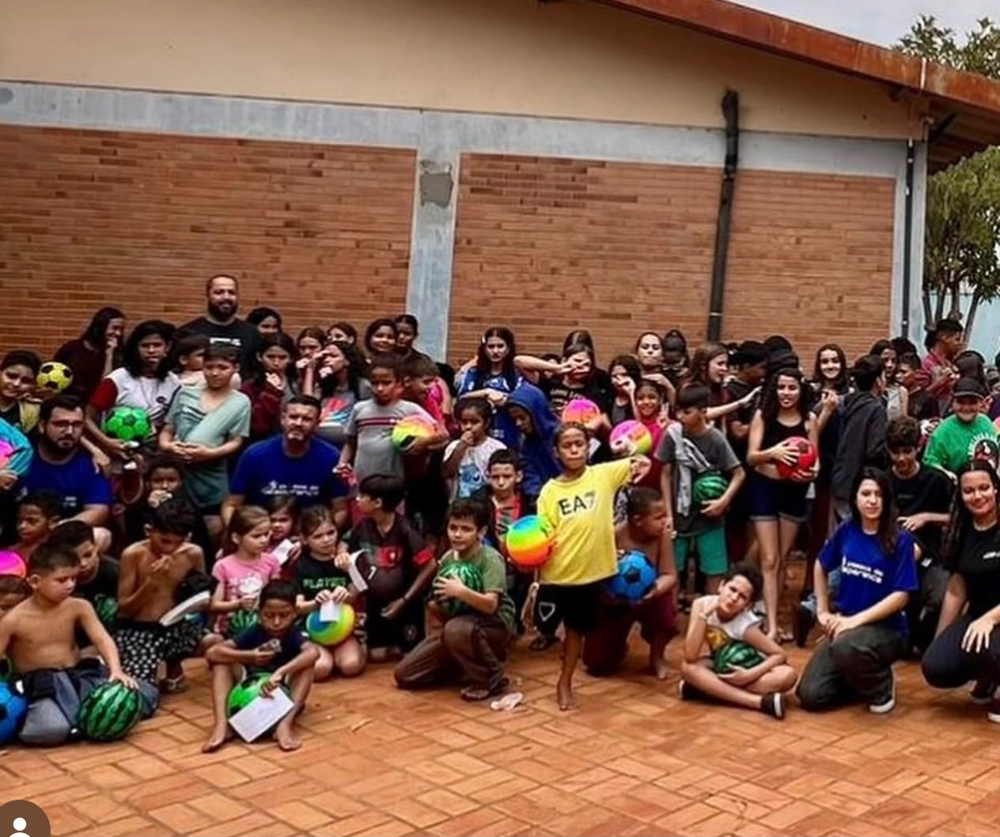
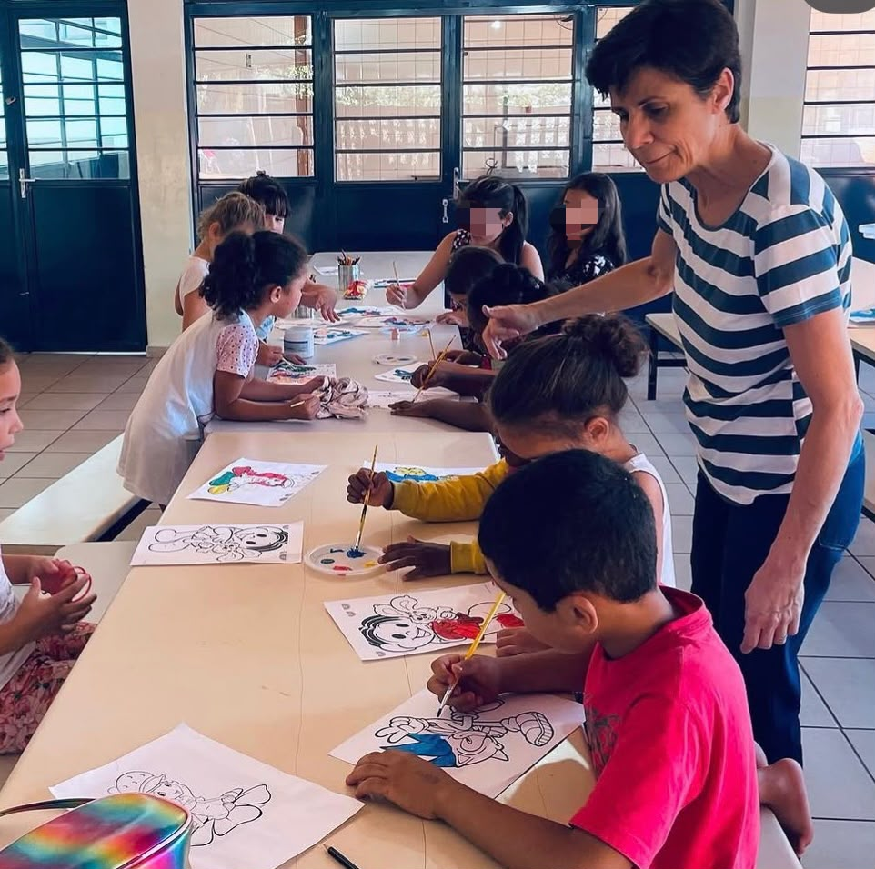

Equipes de Futsal
Estamos preparando a volta das equipes de futsal, oferecendo às crianças e jovens a oportunidade de praticar esporte, desenvolver disciplina e fortalecer o espírito de união.

A cada encontro, promovemos dinâmicas e atividades em grupo que estimulam a cooperação, a criatividade e o respeito mútuo. É um espaço onde as crianças e jovens descobrem novas habilidades, aprendem a trabalhar em equipe e fortalecem valores que levam para a vida toda.
Iniciamos nossos sábados com um momento especial de leitura bíblica e reflexão. Esse tempo nos ajuda a cultivar fé, esperança e princípios sólidos, preparando o coração e a mente para todas as experiências que virão ao longo do dia.
O esporte é parte essencial da nossa rotina. Nas oficinas esportivas e recreativas, cada criança tem a oportunidade de se divertir, desenvolver disciplina, superar desafios e aprender a importância da união. Mais do que jogar, é um momento de crescimento e amizade.
Encerramos nossos encontros com um lanche coletivo, que simboliza comunhão e gratidão. É a hora de celebrar as conquistas do dia, fortalecer os laços de amizade e criar memórias felizes que ficam guardadas no coração.

Estamos preparando a volta das equipes de futsal, oferecendo às crianças e jovens a oportunidade de praticar esporte, desenvolver disciplina e fortalecer o espírito de união.
Entrega de cestas básicas, pois nosso compromisso com a comunidade se estende além das atividades esportivas. A entrega de cestas básicas busca apoiar famílias em situação de vulnerabilidade, levando alimento, esperança e solidariedade.
Queremos abrir caminhos para o futuro, oferecendo cursos profissionalizantes que capacitem jovens e adultos para o mercado de trabalho. É uma iniciativa que promove autonomia, dignidade e novas oportunidades de vida.